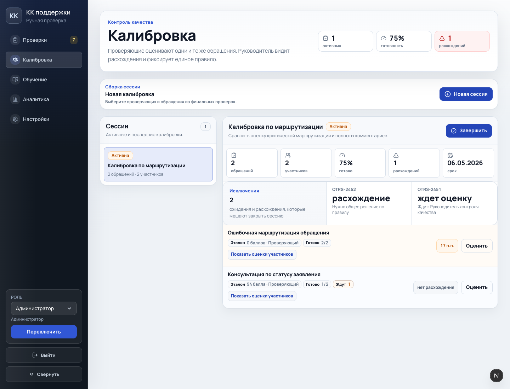
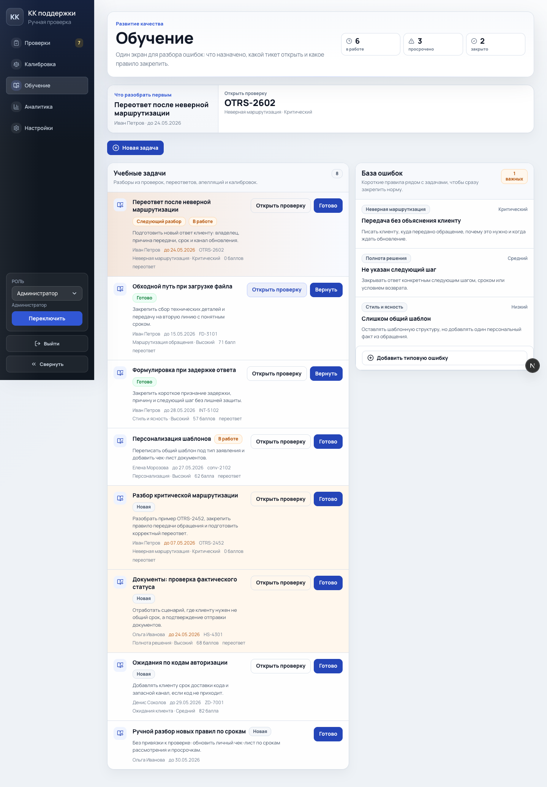
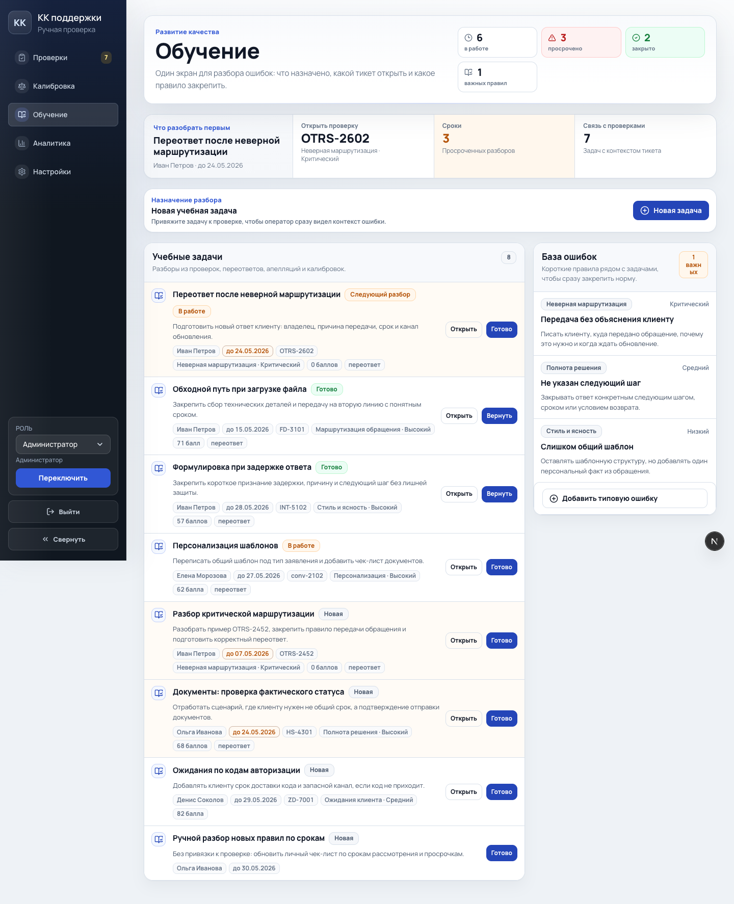

Калибровки и обучение: улучшение интерфейса
Реализация убирает ощущение забытых разделов: оба экрана получили общую командную шапку, фокусные блоки, спокойные формы создания и более плотные рабочие строки.
Что изменено
- Калибровки: добавлена сводка в command center и переработаны строки обращений с чипами состояния.
- Обучение: расширена сводка, фокусная зона теперь показывает сроки и связь с проверками.
- Формы создания обеих сущностей оформлены как command panels, визуально привязанные к рабочему потоку.
- CSS переведен на токены темы там, где раньше бросались в глаза старые жесткие цвета.
До и после


